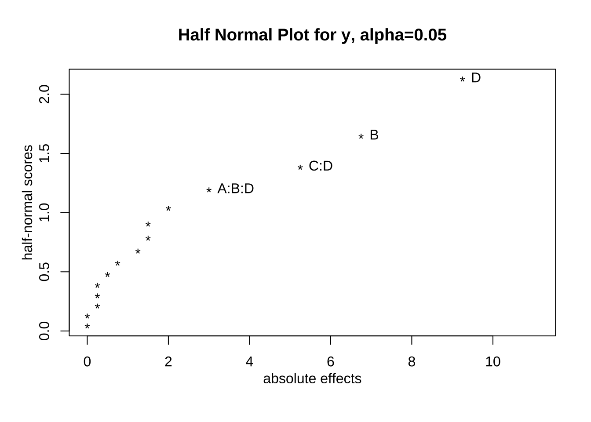

X <- FrF2(nruns=8, nfactors=3, randomize = FALSE)
X A B C
1 -1 -1 -1
2 1 -1 -1
3 -1 1 -1
4 1 1 -1
5 -1 -1 1
6 1 -1 1
7 -1 1 1
8 1 1 1
class=design, type= full factorial 먼저 반복이 없는 \(2^3\) 요인배치법이 적용되는 교과서 예제 7.3 에 대하여 논의합니다.
먼저 R 프로그림을 이용하여 분석을 하기 위해서는 실험 자료를 data.frame 형식으로 만들어야 한다.
먼저 각 요인의 수준을 조합하여 처리의 조합을 만들어 보자. 처리의 조합을 만드는 일은 일일이 손으로 처리 조합을 만들 수 있지만 패키지 FrF2 에 있는 함수 FrF2()를 사용하면 처리 조합에 대한 데이터프레임을 쉽게 만들 수 있다.
이제 \(2^3\) 요인배치법의 처리 조합은 다음과 같이 만들 수 있다.
X <- FrF2(nruns=8, nfactors=3, randomize = FALSE)
X A B C
1 -1 -1 -1
2 1 -1 -1
3 -1 1 -1
4 1 1 -1
5 -1 -1 1
6 1 -1 1
7 -1 1 1
8 1 1 1
class=design, type= full factorial 위에서 함수 FrF2()는 다음과 같은 인자를 가진다.
nruns : 처리 조합의 개수nfactors : 요인의 개수randomize=TRUE : 처리조합의 순서를 임의로 바꾸는 명령FrF2(nruns, nfactors, randomize=TRUE)우리는 지금 3개의 요인을 가진 2요인 배치법을 고려하므로 위와 같이 nruns=8, nfactors=3 으로 지정해야 한다. 또한 실험을 직접 실행하는 것이 아니므로 실험의 순서는 임의화 하지 않는다 (randomize = FALSE). 유의할 점은 요인의 이름은 다른 지정을 하지 않으면 알파벳 대문자 순서(A, B, C,…)로 지정해 준다.
이제 반응값을 위에서 생성한 처리의 조합순서대로 생성하고 함수 cbind() 를 이용하여 실험자료를 만들어 보자.
y <- c(2,-5,15,13,-12,-17,-2,-7)
df <- cbind(X,y)
df %>% kbl() %>% kable_paper("hover", full_width = F)| A | B | C | y |
|---|---|---|---|
| -1 | -1 | -1 | 2 |
| 1 | -1 | -1 | -5 |
| -1 | 1 | -1 | 15 |
| 1 | 1 | -1 | 13 |
| -1 | -1 | 1 | -12 |
| 1 | -1 | 1 | -17 |
| -1 | 1 | 1 | -2 |
| 1 | 1 | 1 | -7 |
위에서 작성한 3 요인의 2수준 배치법의 자료에서 처리의 순서는 표준형 순서(standard order)로 정렬되어 있다.
표준형 순서는 요인의 순서를 A, B, C 로 고려한다면 제일 먼저 나오는 요인의 수준이 가장 빨리 변하고 다음 요인의 순서가 그 보다 느리게 변하며 가장 마지막의 요인에 대한 수준의 순서가 가장 느리게 변하는 것을 의미한다.
즉 요인 A 의 순서는 -+-+-+-+, 요인 B의 순서는 --++--++ 이며 마지막 요인 C의 순서는 ----++++ 이다.
함수 FrF2() 는 randomize = FALSE 로 지정해 주면 처리의 순서를 표준형 순서로 생성한다.
이제 교과서에서 나오는 방법으로 처리 효과를 계산헤 보자.
요인 A 에 대한 주 효과는 인수분해 방법을 통해서 다음과 같이 계산할 수 있다.
\[ A = \frac{1}{4} (a-1)(b+1)(c+1) = \frac{1}{4} [(a + ac + ab + abs) - ((1)-c-b-bd)] \]
따라서 A 에 대한 주효과는 다음과 같이 계산된다.
\[ A = \frac{1}{4} [(-5+13-17-7)-(2 +15-12-2)] = -4.75 \]
다른 모든 요인들의 주효과와 상호작용 효과는 교과서 181-182에 나오는 인수분해법으로 구할 수 있다.
yates()패키지 unrepx 에 나오는 함수 yates 를 이용하면 손쉽게 처리 효과를 계산할 수 있다.
yates(df$y, labels = c("A", "B", "C")) A B AB C AC BC ABC
-4.75 12.75 1.25 -15.75 -0.25 -2.75 -1.25
attr(,"mean")
-1.625 함수 yates 는 첫 번째 인자로 표준형 순서로 정렬되어 있는 반응값의 벡터를 넣어주고 두 번째 인자 labels 로 요인의 이름으로 구성된 문자 벡터를 넣어준다. 함수 yates 의 결과는 각 요인의 효과를 계산해 주고 마지막으로 전체 평균 \(\bar y\) 를 생성한다.
함수 yates()를 이용하면 표준형 순서로서 영문 소문자 표기법으로 표시된 처리조합을 구할 수 있다. 예를 들어서 \(2^4\) 실험법에 대하여 abcd 표기법으로 표준형 순서로 정렬된 처리 조합을 아래와 같이 구할 수 있다,
물론 가장 처음의 처리 (1) 은 결과에 나타나지 않는다.
XX <- FrF2(16, 4, randomize=FALSE)
yy <- 1:16
df4 <- cbind(XX,yy)
df4 %>% kbl() %>% kable_paper("hover", full_width = F)| A | B | C | D | yy |
|---|---|---|---|---|
| -1 | -1 | -1 | -1 | 1 |
| 1 | -1 | -1 | -1 | 2 |
| -1 | 1 | -1 | -1 | 3 |
| 1 | 1 | -1 | -1 | 4 |
| -1 | -1 | 1 | -1 | 5 |
| 1 | -1 | 1 | -1 | 6 |
| -1 | 1 | 1 | -1 | 7 |
| 1 | 1 | 1 | -1 | 8 |
| -1 | -1 | -1 | 1 | 9 |
| 1 | -1 | -1 | 1 | 10 |
| -1 | 1 | -1 | 1 | 11 |
| 1 | 1 | -1 | 1 | 12 |
| -1 | -1 | 1 | 1 | 13 |
| 1 | -1 | 1 | 1 | 14 |
| -1 | 1 | 1 | 1 | 15 |
| 1 | 1 | 1 | 1 | 16 |
yates(df4$yy , c("A", "B", "C", "D")) A B AB C AC BC ABC D AD BD ABD CD ACD BCD ABCD
1 2 0 4 0 0 0 8 0 0 0 0 0 0 0
attr(,"mean")
8.5 R 프로그램을 이용하여 Yates 방법으로 처리 효과를 계산해주는 함수 myyates 를 만들어 보자.
# yates 방법으로 처리 효과를 계산해주는 함수
myyates <- function(y) {
n <- length(y) #자료의 수
k = round(log(n)/log(2)) # 요인의 수
nhalf <- n/2 # (자료의 수)/2
res<- rep(0,n)
for ( i in 1:k ){
for (j in 1:nhalf) {
res[j] <- y[2*j-1] + y[2*j]
}
for (j in 1:nhalf) {
res[j+nhalf] <- -y[2*j-1] + y[2*j]
}
y <-res
}
res <- res/nhalf
res[1] <- res[1]/2
res
}
myyates(df$y) [1] -1.625 -4.750 12.750 1.250 -15.750 -0.250 -2.750 -1.250함수 myyates 를 이용하여 얻은 결과에서 처음 나온 수는 전체 평균의 2 배이며 두 번째 수부터 표준 효과의 추정값이다.
이제 위에서 고려한 데이터프레임 df 에 대한 회귀식을 적합시키자.
아래 회귀식에서 y~A*B*C 는 변수 y 를 반응변수로 하고 3개의 요인 A, B, C 의 각 개별 효과와 모든 상호작용 효과를 고려한 선형 모형이다.
즉, 아래 적합한 모형은 요인의 수준이 모두 범주형인 경우이므로 다음과 같은 3원배치 분산분석 모형을 적합하는 것이다.
\[ y_{ijk} = \mu + \alpha_i + \beta_j + \gamma_k + (\alpha \beta)_{ij} +(\beta \gamma)_{jk} + (\alpha \gamma )_{ik} + (\alpha \beta \gamma_k) + e_{ijk},\quad i=1,2,~j=1,2,~k=1,2 \tag{5.1}\]
fm1 <- lm (y~ A*B*C, data=df)
summary(fm1)
Call:
lm.default(formula = y ~ A * B * C, data = df)
Residuals:
ALL 8 residuals are 0: no residual degrees of freedom!
Coefficients:
Estimate Std. Error t value Pr(>|t|)
(Intercept) -1.625 NaN NaN NaN
A1 -2.375 NaN NaN NaN
B1 6.375 NaN NaN NaN
C1 -7.875 NaN NaN NaN
A1:B1 0.625 NaN NaN NaN
A1:C1 -0.125 NaN NaN NaN
B1:C1 -1.375 NaN NaN NaN
A1:B1:C1 -0.625 NaN NaN NaN
Residual standard error: NaN on 0 degrees of freedom
Multiple R-squared: 1, Adjusted R-squared: NaN
F-statistic: NaN on 7 and 0 DF, p-value: NA위의 모형 식 5.1 은 모수의 개수가 \(1+2+2+2+4+4+4+8=27\)이다. 하지만 관측값이 8개이기 때문에 정규방정식의 해가 유일하게 존재하지 않는다. 따라서 최소한 19개의 제약 조건이 필요하다. 고차원 배치법에 대한 회귀모형에서 제약조건을 주는 방법은 과목의 범위를 벋어나므로 생략한다.
위의 추정 결과는 8개의 관측값을 가지고 8개의 모수를 가진 모형을 적합하는 경우이며 이렇게 관측값의 개수와 모수의 개수가 같은 모형을 포화모형(saturated model)이라고 부른다. 포화모형에서는 오차항의 분산을 추정할 수 있는 잔차가 모두 0이기 때문에 \(\sigma^2\) 을 추정할 수 없다. 따라서 표준오차도 구할 수 없다.
회귀식의 계수에 대한 추정치에서 절편을 제외한 추정치는 대응하는 효과 추정치의 절반인 것을 알 수 있다. 절편의 주정치는 전체 평균 \(\bar y\)이다.
coef(fm1)[-1]*2 A1 B1 C1 A1:B1 A1:C1 B1:C1 A1:B1:C1
-4.75 12.75 -15.75 1.25 -0.25 -2.75 -1.25 위에서 적합한 회귀식을 선형모형 \(\pmb y = \pmb X \pmb \beta + \pmb e\) 로 보면 모형의 계획행렬 \(\pmb X\) 는 다음과 같이 나오며 열이 각 효과의 대비인 것을 알 수 있다.
X <- model.matrix(fm1)
X (Intercept) A1 B1 C1 A1:B1 A1:C1 B1:C1 A1:B1:C1
1 1 -1 -1 -1 1 1 1 -1
2 1 1 -1 -1 -1 -1 1 1
3 1 -1 1 -1 -1 1 -1 1
4 1 1 1 -1 1 -1 -1 -1
5 1 -1 -1 1 1 -1 -1 1
6 1 1 -1 1 -1 1 -1 -1
7 1 -1 1 1 -1 -1 1 -1
8 1 1 1 1 1 1 1 1
attr(,"assign")
[1] 0 1 2 3 4 5 6 7
attr(,"contrasts")
attr(,"contrasts")$A
[,1]
-1 -1
1 1
attr(,"contrasts")$B
[,1]
-1 -1
1 1
attr(,"contrasts")$C
[,1]
-1 -1
1 1yvec <- matrix(df$y, 8, 1)
yvec [,1]
[1,] 2
[2,] -5
[3,] 15
[4,] 13
[5,] -12
[6,] -17
[7,] -2
[8,] -7따라서 위에서 함수 model.matrix 로 구한 행렬 \(\pmb X\) 의 전치 \(\pmb X^t\) 에 반응 변수 벡터 \(\pmb y\) 를 곱해주면, 즉 \(\pmb X^t \pmb y\) 는 각 효과에 대하여 합으로 구한 대비를 얻을 수 있다. 이렇게 합으로 구한 대비를 적절한 수로 나누어 주면 평균의 대비도 얻을 수 있다. 이 예제와 같은 반복이 없는 \(2^3\) 배치법은 4로 나누어 주면 된다. 주의할 점은 앞에서 효과를 회귀계수로 구하는 경우와 마찬가지로 \(\pmb X^t \pmb y\) 의 첫 번째 원소는 모든 반응값의 총합 \(T_{...}\) 인 것에 유의하자.
\[ \pmb X^t \pmb y = \begin{bmatrix} T_{...} \\ T_{1..} - T_{0..} \\ \vdots \end{bmatrix} \]
예를 들어서 \(A\) 에 대한 주효과는 다음과 같이 구할 수 있으며 아래에서 total_effect 가 \(T_{1..} - T_{0..}\) 이고 mean_effect 는 \((T_{1..} - T_{0..})/4\) 이다.
\[ A = \frac{1}{4} ( T_{1..} - T_{0..}) = \frac{1}{4} \begin{bmatrix} -1 & 1 & -1 & 1 & -1 & 1 & -1 & 1 \end{bmatrix} \begin{bmatrix} 2 \\ -5 \\ 15 \\ 13 \\ -12 \\ -17 \\ -2 \\ -7 \end{bmatrix} = -4.75 \]
total_effect <- t(X) %*% yvec
total_effect <- total_effect[-1]
total_effect[1] -19 51 -63 5 -1 -11 -5mean_effect <- total_effect/4
mean_effect[1] -4.75 12.75 -15.75 1.25 -0.25 -2.75 -1.25앞에서 회귀모형의 계수가 각 효과의 2 배로 나타나는 이유는 다음과 같이 회귀식의 계수를 구하는 정규방정식에서 \(\pmb X^t \pmb X\) 가 대각행렬이며 대각원소의 값이 자료의 개수 \((2^3) = 8\) 로 나타나기 때문이다. 효과를 구하기 구하는 때는 함으로 이루어진 대비를 \(2^2=4\) 로 나누기 떄문에 회귀계수의 추정값은 효과의 추정값의 절반으로 나타난다.
\[ \pmb X^t \pmb X \pmb \beta = \pmb X^t \pmb y \quad \rightarrow \quad \hat{\pmb \beta} = (\pmb X^t \pmb X)^{-1}\pmb X^t \pmb y \]
t(X) %*% X (Intercept) A1 B1 C1 A1:B1 A1:C1 B1:C1 A1:B1:C1
(Intercept) 8 0 0 0 0 0 0 0
A1 0 8 0 0 0 0 0 0
B1 0 0 8 0 0 0 0 0
C1 0 0 0 8 0 0 0 0
A1:B1 0 0 0 0 8 0 0 0
A1:C1 0 0 0 0 0 8 0 0
B1:C1 0 0 0 0 0 0 8 0
A1:B1:C1 0 0 0 0 0 0 0 8beta_hat <- solve(t(X) %*% X) %*% t(X) %*% yvec
beta_hat [,1]
(Intercept) -1.625
A1 -2.375
B1 6.375
C1 -7.875
A1:B1 0.625
A1:C1 -0.125
B1:C1 -1.375
A1:B1:C1 -0.625분산분석표는 앞에서 적합한 모형 식 5.1 을 적합한 후 aov() 또는 anova() 함수를 적용하면 구할 수 있다.
앞에서 언급하였듯이 모형 식 5.1 은 포화모형이므로 제곱합은 구할 수 있지만 잔차제곱합을 구할 수 없으므로 가설 검정은 할 수 없다.
anova(fm1)Analysis of Variance Table
Response: y
Df Sum Sq Mean Sq F value Pr(>F)
A 1 45.13 45.13 NaN NaN
B 1 325.12 325.12 NaN NaN
C 1 496.13 496.13 NaN NaN
A:B 1 3.13 3.13 NaN NaN
A:C 1 0.13 0.13 NaN NaN
B:C 1 15.12 15.12 NaN NaN
A:B:C 1 3.13 3.13 NaN NaN
Residuals 0 0.00 NaN 위의 분산분석표에서 효과 \(A \times B\), \(A \times C\), \(A \times B \times C\) 에 대한 제곱합의 크기가 다른 효과에 비하여 상대적으로 매우 작다.
핵심요인 효과는 효과 추정치의 절대값 \(| \bar y_1 -\bar y_0|\) 들을 가지고 반정규확률 그림을 그려서 선별할 수 있다.
반정규확률 그림은 패키지 FrF2에 있는 함수 DanielPlot() 를 사용하여 구할 수 있다.
DanielPlot(fm1, half=TRUE)
위의 반정규확률 그림을 보면 주요인 \(B\) 와 \(C\) 가 핵심 요인임을 알 수 있다.
교과서 예제의 결론과 같이 제곱합이 작은 3개의 효과 \(A \times B\), \(A \times C\), \(A \times B \times C\) 를 풀링하여 모형을 다시 적합해 보자.
이제 회귀식을 적합시키자.
fm11 <- lm (y~ A+B+C+B*C, data=df)
summary(fm11)
Call:
lm.default(formula = y ~ A + B + C + B * C, data = df)
Residuals:
1 2 3 4 5 6 7 8
1.125 -1.125 -1.375 1.375 0.125 -0.125 0.125 -0.125
Coefficients:
Estimate Std. Error t value Pr(>|t|)
(Intercept) -1.6250 0.5154 -3.153 0.051148 .
A1 -2.3750 0.5154 -4.608 0.019220 *
B1 6.3750 0.5154 12.369 0.001138 **
C1 -7.8750 0.5154 -15.280 0.000609 ***
B1:C1 -1.3750 0.5154 -2.668 0.075826 .
---
Signif. codes: 0 '***' 0.001 '**' 0.01 '*' 0.05 '.' 0.1 ' ' 1
Residual standard error: 1.458 on 3 degrees of freedom
Multiple R-squared: 0.9928, Adjusted R-squared: 0.9832
F-statistic: 103.7 on 4 and 3 DF, p-value: 0.001514anova(fm11)Analysis of Variance Table
Response: y
Df Sum Sq Mean Sq F value Pr(>F)
A 1 45.13 45.13 21.2353 0.0192201 *
B 1 325.12 325.12 153.0000 0.0011384 **
C 1 496.13 496.13 233.4706 0.0006088 ***
B:C 1 15.12 15.12 7.1176 0.0758265 .
Residuals 3 6.38 2.13
---
Signif. codes: 0 '***' 0.001 '**' 0.01 '*' 0.05 '.' 0.1 ' ' 1참고로 처리 조합의 데이터프레임을 만드는 다른 방법을 알아보자.
함수 expand.grid() 는 인자로 주어진 벡터들의 원소들로 구성된 모든 조합을 만들어 주는 함수이다.
X1 <- expand.grid(A = gl(2, 1, labels = c("-1", "1")),
B = gl(2, 1, labels = c("-1", "1")),
C = gl(2, 1, labels = c("-1", "1")))
X1 A B C
1 -1 -1 -1
2 1 -1 -1
3 -1 1 -1
4 1 1 -1
5 -1 -1 1
6 1 -1 1
7 -1 1 1
8 1 1 1함수 expand.grid() 의 인자에 대한 설명은 다음과 같다.
gl(n, k, length = n*k, labels = seq_len(n), ordered = FALSE)
- n: an integer giving the number of levels.
- k: an integer giving the number of replications.
- labels: an optional vector of labels for the resulting factor levels.
- ordered: a logical indicating whether the result should be ordered or not.만약 반복이 있다면 데이터프레임을 함수 rbind() 를 이용하여 붙이면 된다.
X2 <- rbind(X1, X1)
X2 A B C
1 -1 -1 -1
2 1 -1 -1
3 -1 1 -1
4 1 1 -1
5 -1 -1 1
6 1 -1 1
7 -1 1 1
8 1 1 1
9 -1 -1 -1
10 1 -1 -1
11 -1 1 -1
12 1 1 -1
13 -1 -1 1
14 1 -1 1
15 -1 1 1
16 1 1 1먼저 반복이 없는 \(2^4\) 요인배치법이 적용되는 교과서 예제 7.4 에 대하여 논의합니다.
X <- FrF2(nruns=16, nfactors=4, randomize = FALSE)
X A B C D
1 -1 -1 -1 -1
2 1 -1 -1 -1
3 -1 1 -1 -1
4 1 1 -1 -1
5 -1 -1 1 -1
6 1 -1 1 -1
7 -1 1 1 -1
8 1 1 1 -1
9 -1 -1 -1 1
10 1 -1 -1 1
11 -1 1 -1 1
12 1 1 -1 1
13 -1 -1 1 1
14 1 -1 1 1
15 -1 1 1 1
16 1 1 1 1
class=design, type= full factorial y<- c(-1, 0, 9, 4, 5, 3, 11, 8,-1, -9, 1, 5, -9, -13, -5, -4)
df2 <- cbind(X,y)
df2 %>% kbl() %>% kable_paper("hover", full_width = F)| A | B | C | D | y |
|---|---|---|---|---|
| -1 | -1 | -1 | -1 | -1 |
| 1 | -1 | -1 | -1 | 0 |
| -1 | 1 | -1 | -1 | 9 |
| 1 | 1 | -1 | -1 | 4 |
| -1 | -1 | 1 | -1 | 5 |
| 1 | -1 | 1 | -1 | 3 |
| -1 | 1 | 1 | -1 | 11 |
| 1 | 1 | 1 | -1 | 8 |
| -1 | -1 | -1 | 1 | -1 |
| 1 | -1 | -1 | 1 | -9 |
| -1 | 1 | -1 | 1 | 1 |
| 1 | 1 | -1 | 1 | 5 |
| -1 | -1 | 1 | 1 | -9 |
| 1 | -1 | 1 | 1 | -13 |
| -1 | 1 | 1 | 1 | -5 |
| 1 | 1 | 1 | 1 | -4 |
yates(df2$y, c("A", "B", "C", "D")) A B AB C AC BC ABC D AD BD ABD CD ACD
-2.00 6.75 1.25 -1.50 0.00 -0.75 -0.25 -9.25 0.25 0.50 3.00 -5.25 0.25
BCD ABCD
0.00 -1.50
attr(,"mean")
0.25 이제 포화모형인 회귀식을 적합시키자.
fm2 <- lm (y~ A*B*C*D, data=df2)
summary(fm2)
Call:
lm.default(formula = y ~ A * B * C * D, data = df2)
Residuals:
ALL 16 residuals are 0: no residual degrees of freedom!
Coefficients:
Estimate Std. Error t value Pr(>|t|)
(Intercept) 2.500e-01 NaN NaN NaN
A1 -1.000e+00 NaN NaN NaN
B1 3.375e+00 NaN NaN NaN
C1 -7.500e-01 NaN NaN NaN
D1 -4.625e+00 NaN NaN NaN
A1:B1 6.250e-01 NaN NaN NaN
A1:C1 -1.095e-15 NaN NaN NaN
B1:C1 -3.750e-01 NaN NaN NaN
A1:D1 1.250e-01 NaN NaN NaN
B1:D1 2.500e-01 NaN NaN NaN
C1:D1 -2.625e+00 NaN NaN NaN
A1:B1:C1 -1.250e-01 NaN NaN NaN
A1:B1:D1 1.500e+00 NaN NaN NaN
A1:C1:D1 1.250e-01 NaN NaN NaN
B1:C1:D1 1.045e-15 NaN NaN NaN
A1:B1:C1:D1 -7.500e-01 NaN NaN NaN
Residual standard error: NaN on 0 degrees of freedom
Multiple R-squared: 1, Adjusted R-squared: NaN
F-statistic: NaN on 15 and 0 DF, p-value: NAcoef(fm2)[-1]*2 A1 B1 C1 D1 A1:B1
-2.000000e+00 6.750000e+00 -1.500000e+00 -9.250000e+00 1.250000e+00
A1:C1 B1:C1 A1:D1 B1:D1 C1:D1
-2.190503e-15 -7.500000e-01 2.500000e-01 5.000000e-01 -5.250000e+00
A1:B1:C1 A1:B1:D1 A1:C1:D1 B1:C1:D1 A1:B1:C1:D1
-2.500000e-01 3.000000e+00 2.500000e-01 2.090373e-15 -1.500000e+00 anova(fm2)Analysis of Variance Table
Response: y
Df Sum Sq Mean Sq F value Pr(>F)
A 1 16.00 16.00 NaN NaN
B 1 182.25 182.25 NaN NaN
C 1 9.00 9.00 NaN NaN
D 1 342.25 342.25 NaN NaN
A:B 1 6.25 6.25 NaN NaN
A:C 1 0.00 0.00 NaN NaN
B:C 1 2.25 2.25 NaN NaN
A:D 1 0.25 0.25 NaN NaN
B:D 1 1.00 1.00 NaN NaN
C:D 1 110.25 110.25 NaN NaN
A:B:C 1 0.25 0.25 NaN NaN
A:B:D 1 36.00 36.00 NaN NaN
A:C:D 1 0.25 0.25 NaN NaN
B:C:D 1 0.00 0.00 NaN NaN
A:B:C:D 1 9.00 9.00 NaN NaN
Residuals 0 0.00 NaN 이제 3차 이상의 상호적용을 풀링한 모형을 적합시키자.
fm21 <- lm (y~ A + B + C+ D+ A*B + A*C + A*D + B*C + B*D + C*D, data=df2)
summary(fm21)
Call:
lm.default(formula = y ~ A + B + C + D + A * B + A * C + A *
D + B * C + B * D + C * D, data = df2)
Residuals:
1 2 3 4 5 6 7 8 9 10 11 12 13
-2.25 2.25 2.00 -2.00 -0.75 0.75 1.00 -1.00 2.50 -2.50 -2.25 2.25 0.50
14 15 16
-0.50 -0.75 0.75
Coefficients:
Estimate Std. Error t value Pr(>|t|)
(Intercept) 2.500e-01 7.542e-01 0.331 0.75371
A1 -1.000e+00 7.542e-01 -1.326 0.24219
B1 3.375e+00 7.542e-01 4.475 0.00655 **
C1 -7.500e-01 7.542e-01 -0.994 0.36564
D1 -4.625e+00 7.542e-01 -6.133 0.00167 **
A1:B1 6.250e-01 7.542e-01 0.829 0.44500
A1:C1 -1.352e-15 7.542e-01 0.000 1.00000
A1:D1 1.250e-01 7.542e-01 0.166 0.87485
B1:C1 -3.750e-01 7.542e-01 -0.497 0.64011
B1:D1 2.500e-01 7.542e-01 0.331 0.75371
C1:D1 -2.625e+00 7.542e-01 -3.481 0.01765 *
---
Signif. codes: 0 '***' 0.001 '**' 0.01 '*' 0.05 '.' 0.1 ' ' 1
Residual standard error: 3.017 on 5 degrees of freedom
Multiple R-squared: 0.9364, Adjusted R-squared: 0.8091
F-statistic: 7.357 on 10 and 5 DF, p-value: 0.01992anova(fm21)Analysis of Variance Table
Response: y
Df Sum Sq Mean Sq F value Pr(>F)
A 1 16.00 16.00 1.7582 0.242188
B 1 182.25 182.25 20.0275 0.006548 **
C 1 9.00 9.00 0.9890 0.365645
D 1 342.25 342.25 37.6099 0.001674 **
A:B 1 6.25 6.25 0.6868 0.444996
A:C 1 0.00 0.00 0.0000 1.000000
A:D 1 0.25 0.25 0.0275 0.874848
B:C 1 2.25 2.25 0.2473 0.640107
B:D 1 1.00 1.00 0.1099 0.753712
C:D 1 110.25 110.25 12.1154 0.017645 *
Residuals 5 45.50 9.10
---
Signif. codes: 0 '***' 0.001 '**' 0.01 '*' 0.05 '.' 0.1 ' ' 1DanielPlot(fm2, half=TRUE)
fm22 <- lm (y~ A+B+C+D+ C*D, data=df2)
summary(fm22)
Call:
lm.default(formula = y ~ A + B + C + D + C * D, data = df2)
Residuals:
Min 1Q Median 3Q Max
-3.625 -1.438 0.250 1.375 3.625
Coefficients:
Estimate Std. Error t value Pr(>|t|)
(Intercept) 0.2500 0.5876 0.425 0.679529
A1 -1.0000 0.5876 -1.702 0.119634
B1 3.3750 0.5876 5.743 0.000187 ***
C1 -0.7500 0.5876 -1.276 0.230691
D1 -4.6250 0.5876 -7.871 1.36e-05 ***
C1:D1 -2.6250 0.5876 -4.467 0.001203 **
---
Signif. codes: 0 '***' 0.001 '**' 0.01 '*' 0.05 '.' 0.1 ' ' 1
Residual standard error: 2.351 on 10 degrees of freedom
Multiple R-squared: 0.9227, Adjusted R-squared: 0.8841
F-statistic: 23.88 on 5 and 10 DF, p-value: 2.925e-05anova(fm22)Analysis of Variance Table
Response: y
Df Sum Sq Mean Sq F value Pr(>F)
A 1 16.00 16.00 2.8959 0.1196341
B 1 182.25 182.25 32.9864 0.0001869 ***
C 1 9.00 9.00 1.6290 0.2306913
D 1 342.25 342.25 61.9457 1.358e-05 ***
C:D 1 110.25 110.25 19.9548 0.0012029 **
Residuals 10 55.25 5.53
---
Signif. codes: 0 '***' 0.001 '**' 0.01 '*' 0.05 '.' 0.1 ' ' 1이제 반복이 있는 \(2^3\) 요인배치법이 적용되는 예제에 대하여 논의합니다.
자료는 (Montgomery 2017) 이 나온 예제 6.1 을 사용하였다. 반도체 공정에서 웨이퍼를 만드는 공정에서 다음과 같은 2개의 수준을 가진 3개의 요인과 반응변수을 고려한 실험을 실시하였다.
각 처리 조합마다 2개의 반복 측정값을 얻었다. 을 얻었다.
패키지 FrF2 에 있는 함수 FrF2()에서 replications=2를 지정하면 2개의 반복이 있는 \(2^3\) 요인배치법의 처리 조합을 생성해준다.
이제 \(2^3\) 요인배치법의 처리 조합은 다음과 같이 만들 수 있다.
X <- FrF2(nruns=8, nfactors=3, randomize = FALSE, replications=2)
X <- as.data.frame(X)
X A B C Blocks
1 -1 -1 -1 .1
2 1 -1 -1 .1
3 -1 1 -1 .1
4 1 1 -1 .1
5 -1 -1 1 .1
6 1 -1 1 .1
7 -1 1 1 .1
8 1 1 1 .1
9 -1 -1 -1 .2
10 1 -1 -1 .2
11 -1 1 -1 .2
12 1 1 -1 .2
13 -1 -1 1 .2
14 1 -1 1 .2
15 -1 1 1 .2
16 1 1 1 .2X <- X[,-4] # 블럭변수가 필요없으모 제외
X A B C
1 -1 -1 -1
2 1 -1 -1
3 -1 1 -1
4 1 1 -1
5 -1 -1 1
6 1 -1 1
7 -1 1 1
8 1 1 1
9 -1 -1 -1
10 1 -1 -1
11 -1 1 -1
12 1 1 -1
13 -1 -1 1
14 1 -1 1
15 -1 1 1
16 1 1 1이제 반응값을 처리조합과 결합히여 실험자료를 만들어 보자.
y <- c(550, 669, 633, 642, 1037, 749, 1075, 729, 604, 650, 601, 635, 1052, 868, 1063, 860)
df3 <- cbind(X,y)
df3 %>% kbl() %>% kable_paper("hover", full_width = F)| A | B | C | y |
|---|---|---|---|
| -1 | -1 | -1 | 550 |
| 1 | -1 | -1 | 669 |
| -1 | 1 | -1 | 633 |
| 1 | 1 | -1 | 642 |
| -1 | -1 | 1 | 1037 |
| 1 | -1 | 1 | 749 |
| -1 | 1 | 1 | 1075 |
| 1 | 1 | 1 | 729 |
| -1 | -1 | -1 | 604 |
| 1 | -1 | -1 | 650 |
| -1 | 1 | -1 | 601 |
| 1 | 1 | -1 | 635 |
| -1 | -1 | 1 | 1052 |
| 1 | -1 | 1 | 868 |
| -1 | 1 | 1 | 1063 |
| 1 | 1 | 1 | 860 |
이제 회귀식을 적합시키자.
fm3 <- lm (y~ A*B*C, data=df3)
summary(fm3)
Call:
lm.default(formula = y ~ A * B * C, data = df3)
Residuals:
Min 1Q Median 3Q Max
-65.50 -11.12 0.00 11.12 65.50
Coefficients:
Estimate Std. Error t value Pr(>|t|)
(Intercept) 776.062 11.865 65.406 3.32e-12 ***
A1 -50.813 11.865 -4.282 0.002679 **
B1 3.688 11.865 0.311 0.763911
C1 153.062 11.865 12.900 1.23e-06 ***
A1:B1 -12.437 11.865 -1.048 0.325168
A1:C1 -76.813 11.865 -6.474 0.000193 ***
B1:C1 -1.062 11.865 -0.090 0.930849
A1:B1:C1 2.812 11.865 0.237 0.818586
---
Signif. codes: 0 '***' 0.001 '**' 0.01 '*' 0.05 '.' 0.1 ' ' 1
Residual standard error: 47.46 on 8 degrees of freedom
Multiple R-squared: 0.9661, Adjusted R-squared: 0.9364
F-statistic: 32.56 on 7 and 8 DF, p-value: 2.896e-05위의 추정 결과는 16개의 관측값을 가지고 8개의 모수를 가진 모형을 적합하는 경우이므로 \(\sigma^2\)을 추정할 수 있다.
회귀식의 계수에 대한 추정치에서 절편을 제외한 추정치는 대응하는 효과 추정치의 절반인 것을 알 수 있다. 절편의 주정치는 전체 평균 \(\bar y\)이다.
coef(fm3)[-1]*2 A1 B1 C1 A1:B1 A1:C1 B1:C1 A1:B1:C1
-101.625 7.375 306.125 -24.875 -153.625 -2.125 5.625 anova(fm3)Analysis of Variance Table
Response: y
Df Sum Sq Mean Sq F value Pr(>F)
A 1 41311 41311 18.3394 0.0026786 **
B 1 218 218 0.0966 0.7639107
C 1 374850 374850 166.4105 1.233e-06 ***
A:B 1 2475 2475 1.0988 0.3251679
A:C 1 94403 94403 41.9090 0.0001934 ***
B:C 1 18 18 0.0080 0.9308486
A:B:C 1 127 127 0.0562 0.8185861
Residuals 8 18020 2253
---
Signif. codes: 0 '***' 0.001 '**' 0.01 '*' 0.05 '.' 0.1 ' ' 1위의 분산분석표에서 효과 \(B \times C\), \(A \times B \times C\) 에 대한 제곱합의 크기가 다른 효과에 비하여 상대적으로 매우 작다.
핵심요인 효과는 효과 추정치의 절대값 \(| \bar y_1 -\bar y_0|\) 들을 가지고 반정규확률 그림을 그려서 선별할 수 있다.
반정규확률 그림은 패키지 FrF2에 있는 함수 DanielPlot() 를 사용하여 구할 수 있다.
DanielPlot(fm3, half=TRUE)위의 반정규확률 그림을 보면 주요인 \(A\), \(C\) 와 상호작용 \(A \times C\) 가 핵심 요인임을 알 수 있다.
이제 핵심 요인으로 판단되는 주요인 \(A\), \(C\) 와 상호작용 \(A \times C\) 만을 포함한 모형을 다시 적합해 보자.
이제 회귀식을 적합시키자.
fm31 <- lm (y~ A+C+A*C, data=df3)
summary(fm31)
Call:
lm.default(formula = y ~ A + C + A * C, data = df3)
Residuals:
Min 1Q Median 3Q Max
-72.50 -15.44 2.50 18.69 66.50
Coefficients:
Estimate Std. Error t value Pr(>|t|)
(Intercept) 776.06 10.42 74.458 < 2e-16 ***
A1 -50.81 10.42 -4.875 0.000382 ***
C1 153.06 10.42 14.685 4.95e-09 ***
A1:C1 -76.81 10.42 -7.370 8.62e-06 ***
---
Signif. codes: 0 '***' 0.001 '**' 0.01 '*' 0.05 '.' 0.1 ' ' 1
Residual standard error: 41.69 on 12 degrees of freedom
Multiple R-squared: 0.9608, Adjusted R-squared: 0.9509
F-statistic: 97.91 on 3 and 12 DF, p-value: 1.054e-08anova(fm31)Analysis of Variance Table
Response: y
Df Sum Sq Mean Sq F value Pr(>F)
A 1 41311 41311 23.767 0.0003816 ***
C 1 374850 374850 215.661 4.951e-09 ***
A:C 1 94403 94403 54.312 8.621e-06 ***
Residuals 12 20858 1738
---
Signif. codes: 0 '***' 0.001 '**' 0.01 '*' 0.05 '.' 0.1 ' ' 1